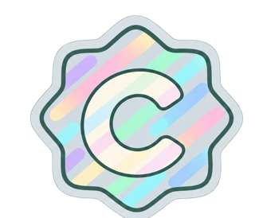
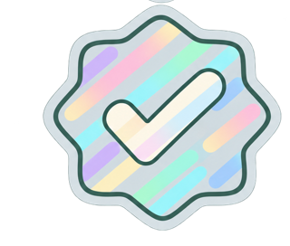

Community-Eintrag
Von Studierenden angelegt
Die Herkunft ist Community. Termine sind noch nicht von drei anderen Accounts bestätigt.
Einführung in die Kunstgeschichte
5 ECTS · Montag, 10:00–11:30
Hörsaal 2
1 von 3 Bestätigungen

Community-verifiziert
Termine gemeinsam geprüft
Drei unterschiedliche andere Accounts haben die aktuellen Termine und Uhrzeiten bestätigt. Keine offizielle Hochschulbestätigung.
Einführung in die Kunstgeschichte
5 ECTS · Montag, 10:00–11:30
Hörsaal 2
3 von 3 Bestätigungen
KI-ausgelesen
Aus einem Chatbot-Import
Kennzeichnet die Herkunft aus KI-Auslesung, auch bei einem Curriculum. Das ist keine Bestätigung der Richtigkeit.
Einführung in die Kunstgeschichte
5 ECTS · Montag, 10:00–11:30
Hörsaal 2
Noch nicht Community-verifiziert